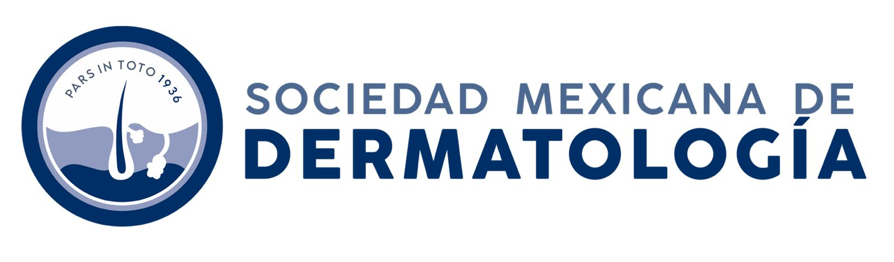
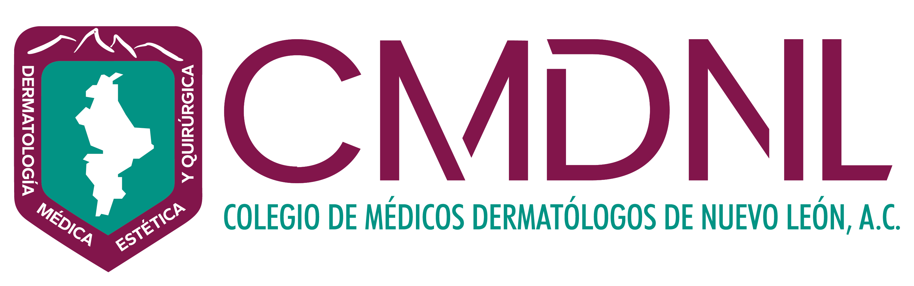

Un día completo de formación práctica en dermatología dirigido a médicos generales, familiares y de otras especialidades. Actualiza tus conocimientos con los temas más relevantes de la consulta diaria, de la mano de especialistas reconocidos.
La Sociedad Mexicana de Dermatología, con más de 90 años de trayectoria, reafirma su compromiso con la formación médica continua. A través del Colegio de Médicos Dermatólogos de Nuevo León, este curso busca fortalecer las competencias dermatológicas de los médicos de primer contacto, mejorando la calidad de atención en México.
Contenido diseñado para aplicarse directamente en tus pacientes con padecimientos de la piel.
Centro de convenciones de clase mundial en Monterrey, Nuevo León.
17 conferencias diseñadas para el médico de primer contacto: diagnóstico diferencial, cuándo referir y manejo racional desde la consulta general.
Coordinadora Académica
Coordinador Académico
Un día completo de actualización dermatológica
Dr. Med. Roger A. González Ramírez / Dra. Lucía Treviño Rangel
Dra. Alejandra Goldaracena Ramírez
Dra. María Dolores Guerrero Putz
Dr. Med. Roger A. González Ramírez
Dr. Candelario Rodríguez Vivian
Dra. Alejandra Goldaracena Ramírez
Dra. María Dolores Guerrero Putz
Dr. Rubén Casados Vergara
Dra. Marcela Santos Flores
Dra. Laura Isabel Ramos Gómez
Dra. Gloria María Rosales Solís
Dr. Med. Roger A. González Ramírez
Dr. Jesús Alberto Cárdenas de la Garza
Dr. Rubén Casados Vergara
Dra. Maira Herz Ruelas
Dra. Lucía Treviño Rangel
Dra. Ana Carolina Manzotti Rodríguez
Dr. Med. Roger A. González Ramírez
Únete a este curso precongreso y actualiza tus conocimientos en dermatología práctica para mejorar
El registro para el curso "Dermatología en Atención Primaria: Hot Topics" aún no está disponible. Estamos preparando todo para ofrecerte la mejor experiencia.
Te invitamos a regresar pronto para completar tu inscripción.
Responsable: Sociedad Mexicana de Dermatología, A.C. y Colegio de Médicos Dermatólogos de Nuevo León, A.C., con domicilio en Monterrey, Nuevo León, México.
Datos personales recabados: Nombre completo, correo electrónico, número telefónico, especialidad médica, institución de adscripción y ciudad de residencia.
Finalidades:
Transferencia: No se compartirán datos con terceros sin consentimiento, salvo lo previsto por la LFPDPPP.
Derechos ARCO: Usted tiene derecho a Acceder, Rectificar, Cancelar u Oponerse al tratamiento de sus datos personales.